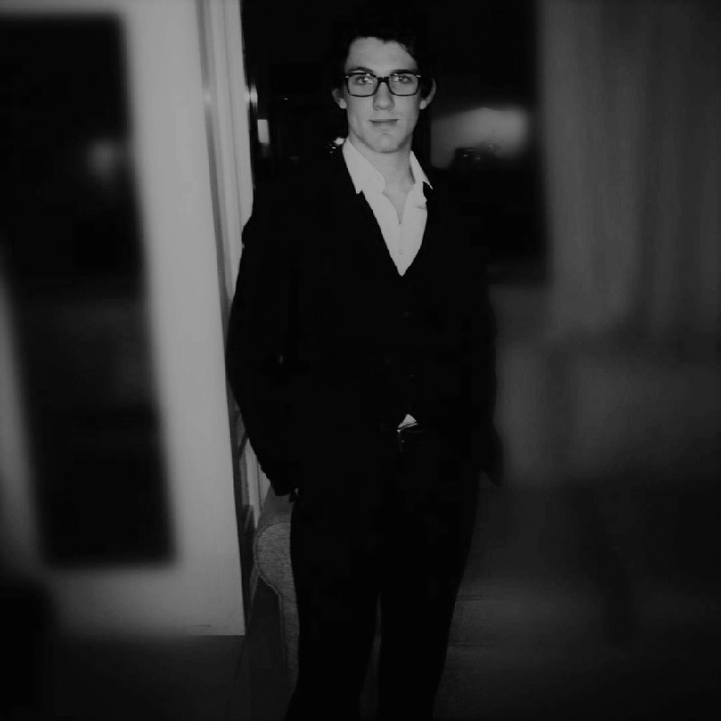

Food security is a large problem faced globally with many factors influencing it such as high population growth, global warming and poor agricultural systems. As the human population continues to rise at an exponential rate the need for food security has become a pertinent issue. Agriculturalists have to look to alternative methods to produce larger amounts of food whilst facing land constraints. This has given rise to the concept of precision agriculture. This is a practise that assists farmers in making management decisions through abstracting data from technology such as satellites, drones, robots and sensors. The data collected via the technology allows farmers to monitor their crops more closely and efficiently.These findings can be used to evaluate yield, soil condition, plant health, fertilizer and pesticide effect and irrigation. This project serves to analyze the most effective yield that can be produced by planting patterns. Farmers organize their orchards into different planting patterns to assist with the many aspects of farm management, such as efficient irrigation and cross-pollination, accessibility for farm equipment and for ease of harvesting. These structures affect the system management recommendations produced through precision agriculture, and assist in providing a strong preliminary for detecting individual trees, as well as identifying locations where trees are missing. There have been many studies conducted over the years to determine the most optimal structure and density for plants per unit area. There is a vast array of results as certain experiments yield different results and it is challenging to determine one specific pattern that Is the best, holding all other factors constant. Using precision farming to detect these patterns in orchards and accurately determine the most suitable structures based on the real data.
Our Specialized Team
